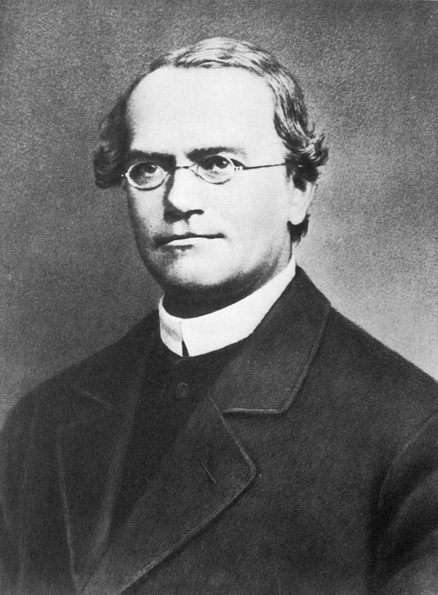
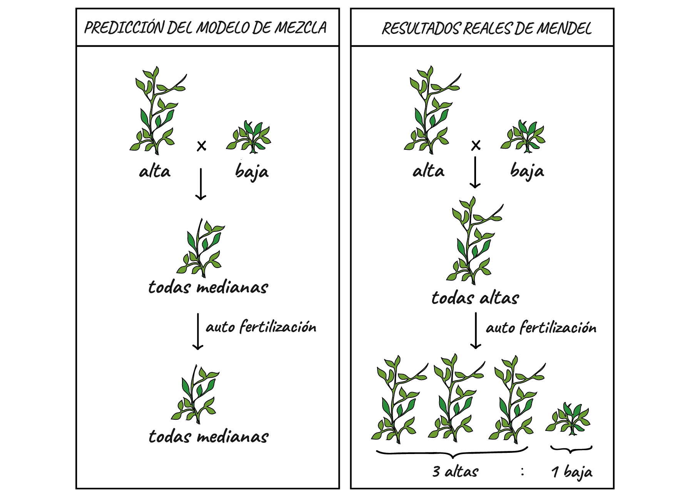
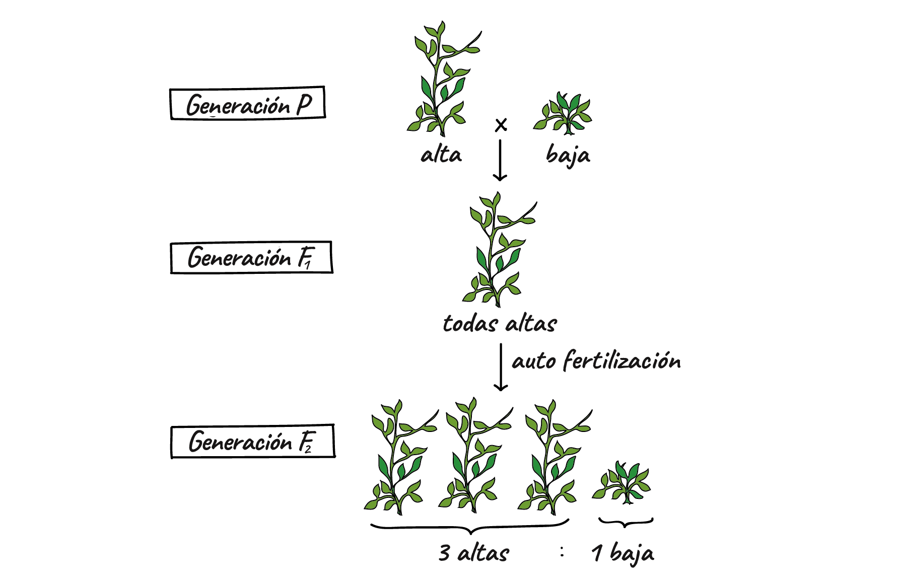

El enigma de la herencia
Durante siglos, la humanidad observó un hecho cotidiano pero misterioso: los hijos se parecen a sus padres, pero no son idénticos a ellos. ¿Cómo se transmiten los rasgos de una generación a la siguiente? ¿Por qué un hijo tiene los ojos de su madre y la nariz de su padre? Antes de Gregor Mendel, la respuesta dominante era tan intuitiva como equivocada: la herencia por mezcla.
Según este modelo, los rasgos de los padres se fundían en la descendencia como dos pinturas mezclándose en un balde. Si un padre era alto y la madre baja, los hijos serían de estatura intermedia. Parecía obvio. Parecía natural. Parecía correcto. Pero Mendel, un monje agustino en un monasterio de Brno, demostró con matemática y guisantes que la herencia no funciona así.
Lo que Mendel descubrió no fue solo biología: fue un cambio de paradigma. Observó que existen factores dominantes que enmascaran a factores recesivos, y que estos factores no se mezclan sino que se transmiten como unidades discretas, intactas, de generación en generación. La herencia no es una mezcla de pinturas: es un juego de cartas.
Brno, 1856: un monje, un jardín y 28.000 plantas

Mendel no era un biólogo profesional en el sentido moderno. Era un monje que había estudiado física y matemáticas en la Universidad de Viena. Esta formación fue clave: donde los naturalistas veían caracteres cualitativos, Mendel vio proporciones numéricas. Donde otros describían, él contaba.
La herencia por mezcla: el paradigma que Mendel derribó
Antes de Mendel, la idea dominante era que la herencia funcionaba como la mezcla de líquidos: los rasgos de padre y madre se diluían en cada generación. Esta idea era tan intuitiva que ni siquiera se consideraba necesario probarla experimentalmente. Era el sentido común elevado a teoría científica.
Charles Darwin, contemporáneo de Mendel, tenía un problema grave con su propia teoría: si la herencia era por mezcla, cualquier variación favorable se diluiría en pocas generaciones al cruzarse con individuos normales. La selección natural no podría funcionar. Fleeming Jenkin señaló esta objeción en 1867, y Darwin nunca pudo responderla satisfactoriamente. Irónicamente, la respuesta estaba en el trabajo de Mendel, publicado apenas dos años antes, que Darwin jamás leyó.
El modelo de mezcla hacía una predicción clara: al cruzar una planta alta con una baja, todas las descendientes serían de altura intermedia. Y si esas intermedias se cruzaban entre sí, seguirían siendo intermedias. Los rasgos originales —alto y bajo— habrían desaparecido para siempre, disueltos en la mezcla.
Mendel demostró que eso no ocurría. Sus guisantes contaban otra historia.
Alta × baja: lo que Mendel realmente observó


Mendel cruzó plantas de guisante de tallo alto (dominante) con plantas de tallo bajo (recesivo). Si la herencia fuera por mezcla, la primera generación (F1) debería tener plantas de altura intermedia. Pero no: todas las plantas de F1 fueron altas.
Cuando Mendel autofertilizó las plantas altas de F1, en la segunda generación (F2) obtuvo una proporción asombrosa: 787 plantas altas y 277 plantas bajas. Aproximadamente 3:1. El rasgo "bajo" no se había disuelto en la mezcla: había estado oculto durante una generación entera y reapareció intacto. Esto era imposible bajo el modelo de mezcla.
La proporción 3:1 no era casualidad. Mendel la encontró en los 7 caracteres que estudió: forma de semilla, color de semilla, color de flor, forma de vaina, color de vaina, posición de flor y altura de planta. Siempre 3:1. Eso solo podía significar una cosa: había reglas matemáticas detrás de la herencia.
"Los factores hereditarios no se fusionan en la descendencia, sino que se mantienen como unidades independientes que se segregan durante la formación de los gametos."
Factores dominantes y recesivos
Mendel propuso que cada carácter está determinado por un par de "factores" (hoy los llamamos alelos). Cada progenitor aporta uno de sus dos factores a la descendencia. Cuando los dos factores son diferentes, uno de ellos —el dominante— se expresa y enmascara al otro —el recesivo—. El recesivo sigue ahí, intacto, esperando su oportunidad de manifestarse en la siguiente generación.
Resultado: 1 AA + 2 Aa + 1 aa = proporción fenotípica 3 altas : 1 baja. La proporción genotípica es 1:2:1.
Mezcla vs. Mendel: dos visiones de la herencia
El choque entre el modelo de mezcla y los resultados de Mendel no fue solo un desacuerdo técnico: fue un enfrentamiento entre dos maneras de pensar la naturaleza. Uno se basaba en la intuición, el otro en la experimentación cuantitativa.
| Aspecto | Modelo de Mezcla | Herencia Mendeliana |
|---|---|---|
| Mecanismo | Los rasgos se funden como líquidos. La información se pierde irrecuperablemente. | Los factores se transmiten como unidades discretas, sin alterarse. |
| F1 (Alta × Baja) | Todas las plantas de altura intermedia. | Todas las plantas altas (el dominante enmascara al recesivo). |
| F2 | Siguen siendo intermedias. El rasgo original nunca vuelve. | Proporción 3:1. El rasgo recesivo reaparece intacto. |
| Base metodológica | Observación cualitativa, sentido común, sin cuantificación. | Experimentación controlada con análisis estadístico riguroso. |
| Poder predictivo | Vago: "se parecerán a ambos padres". | Preciso: proporciones numéricas exactas (3:1, 1:2:1, 9:3:3:1). |
| Compatibilidad con Darwin | Incompatible: la selección natural se diluye. | Perfectamente compatible: los alelos se conservan intactos. |
| Estatus filosófico | Paradigma basado en sentido común no testado. | Paradigma basado en evidencia experimental cuantificada. |
¿Por qué nadie escuchó a Mendel?
Aquí está la paradoja más fascinante de la historia de la ciencia: Mendel publicó sus resultados en 1866. Eran correctos. Eran revolucionarios. Y fueron completamente ignorados durante 35 años. ¿Por qué?
Desde la perspectiva de Thomas Kuhn, Mendel era un científico trabajando fuera del paradigma dominante. La comunidad científica no tenía el marco conceptual para entender lo que proponía. No existían los conceptos de "gen", "alelo" ni "cromosoma". Mendel hablaba de "factores" invisibles que se combinaban según reglas matemáticas. Para los naturalistas de la época, acostumbrados a describir formas y clasificar especies, su trabajo parecía una abstracción matemática sin conexión con la realidad biológica.
Además, Mendel era un monje en Brno, no un profesor en Londres, París o Berlín. El peso institucional y geográfico importa en ciencia: este es un ejemplo perfecto de cómo los factores externalistas determinan la recepción de una teoría.
Perspectiva kuhniana: La "revolución mendeliana" solo fue posible cuando el paradigma anterior entró en crisis y la comunidad científica estuvo preparada para un nuevo marco conceptual. Mendel fue un "anticipador" cuyo descubrimiento no pudo ser asimilado por la ciencia normal de su tiempo.
Perspectiva popperiana: Mendel aplicó el método hipotético-deductivo: formuló una hipótesis (factores discretos con dominancia), dedujo consecuencias observables (proporciones 3:1) y las testó experimentalmente. Su trabajo es un ejemplo de buena ciencia según el falsacionismo. La comunidad falló al no evaluar racionalmente la evidencia.
Perspectiva externalista: La ciencia no es solo lógica y evidencia. Es también instituciones, prestigio, lenguaje y poder. Mendel fue ignorado no porque estuviera equivocado, sino porque estaba en el lugar equivocado, hablando un lenguaje que nadie entendía.
"Mi tiempo llegará."
🤔 Para pensar y debatir
-
1
El modelo de mezcla era intuitivo y parecía correcto. ¿Podés pensar en otras creencias científicas actuales que se basan más en la intuición que en la evidencia experimental? ¿Qué haría falta para testearlas?
-
2
Mendel fue ignorado durante 35 años. ¿Qué nos dice esto sobre la relación entre "tener razón" y "ser escuchado" en ciencia? ¿El conocimiento científico avanza solo por méritos lógicos o también por factores sociales?
-
3
Darwin no conoció el trabajo de Mendel, pero la genética mendeliana resolvió su mayor problema teórico. ¿Qué nos enseña esto sobre la importancia de la comunicación entre disciplinas científicas?
-
4
¿Es la historia de Mendel un ejemplo de "revolución científica" en el sentido de Kuhn, o de "conjeturas y refutaciones" en el sentido de Popper? ¿Cuál de las dos perspectivas explica mejor lo que pasó?
-
5
Mendel usó matemáticas y estadística en biología cuando nadie lo hacía. ¿Podemos decir que su innovación fue tanto metodológica como teórica? ¿Cuánto importa el cómo se investiga además del qué se descubre?